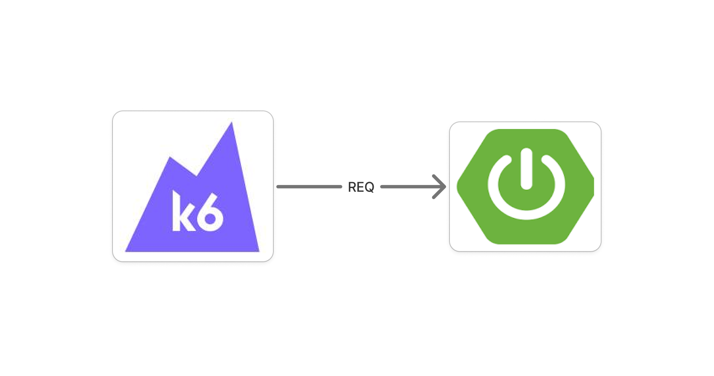

Reactive Non-Blocking Architecture 적용기
해당 서비스는 온프레미스 환경에서 운영되고 있어 트래픽 증가에 맞춰 서버를 즉시 확장하기 어려웠습니다. 장비 증설에는 IDC 랙 공간 확보부터 구매부터 설치까지 상당한 시간이 필요했기 때문에 가용한 서버 처리량을 항상 인지하고 확보해야되는 상황이었기에 한정된 하드웨어에서 얼마나 많은 트래픽을 안정적으로 처리할 수 있는지가 중요했습니다.
문자 전송 서비스는 외부 API, DB, Redis, RabbitMQ 등 I/O 작업이 많고 높은 동시성을 요구하는 구조였습니다. 이에 I/O 대기 중 Thread를 점유하지 않고 소수의 Thread로 많은 요청을 처리할 수 있는 Spring WebFlux의 Reactive Non-Blocking 모델이 이러한 환경에 적합하다고 판단했습니다.
다만 이론적인 장점만으로 기술을 선택하지 않고, 동일한 환경에서 MVC와 WebFlux의 처리량, 응답시간, Thread 사용량을 비교하는 성능 테스트를 진행했습니다.
STEP 01
테스트 목적
WebFlux가 실제로 이점을 주는지 검증하는 것을 목표로 비교 대상은 Spring MVC로 정했습니다.
정해진 하드웨어 스펙에서 높은 트래픽을 부하했을때 얼마나 안정적으로 요청을 처리할 수 있는지를 JVM과 하드웨어 관점에서 분석하는 것이 목표입니다.
STEP 02
테스트 환경
부하 테스트는 크게 두 가지로 나뉩니다.
동시 사용자 수(VU) 방식은 가상 사용자 N명이 각자 요청을 보내고 응답을 받으면 다시 보내기를 반복합니다. 서버가 느려지면 초당 요청 수도 함께 줄어듭니다. 동시 사용자가 늘어날 때 처리량과 응답시간이 어떻게 변하는지 보기 위한 방식입니다.
초당 요청 수(TPS) 방식은 서버의 응답 속도와 관계없이 정해진 요청률을 유지합니다. 서버가 느려져도 설정한 요청량을 계속 시도합니다. 목표한 트래픽을 안정적으로 처리하는지 보기 위한 방식입니다.

| 로직 | MVC는 Thread.sleep(), WebFlux는 delayElement() --> 50ms 고정
|
| JVM Options | Heap 512m, G1, ActiveProcessorCount=8 |
| 하드웨어 스펙 | 4 core 8 thread |
| 부하 | warm-up 10초 | 50 VU → 100 → 250 → 500 VU |
각 모델의 처리 로직은 실제 Redis와 DB를 붙이면 응답 시간이 캐시 상태나 쿼리 플랜에 따라 매번 달라지기때문에 각 모델에 맞는 딜레이 함수를 사용하였습니다.
STEP 03
동시 사용자 수 부하 테스트
우선, 동시 사용자 수를 50에서 100, 250, 500까지 단계적으로 올리고 정확한 측정을 위해서 warm-up을 거친 뒤 부하 테스트를 수행했습니다.
구간별 테스트 집계 사진입니다.
공식문서에 따르면 50 ~ 100 VU 구간에서는 오히려 Reactive Pipeline을 처리하는추가 비용으로 인해 Webflux 모델이 소폭 낮은 처리량을 보였지만, 동시 사용자가 증가하면서 MVC 모델의 Tomcat Worker Thread가 Thread.sleep() blocking에 의해 점유되면서 250 VU부터 요청량 증가로 인해 응답이 지연되는 반면에, WebFlux는 I/O 대기 중 Thread를 점유하지 않는 Non-blocking 방식으로 동일한 Thread를 다른 요청 처리에 활용할 수 있었고, 500 VU에서도 p95를 약 70ms 수준으로 유지하며 높은 TPS를 보입니다.
Spring MVC
Spring WebFlux
실제로 각 모델의 스레드 상태를 JMC에서 확인해보면, 부하 구간에서 MVC는 http-nio-*-exec-* worker들이 대부분 runnable이 아닌 상태로 잡힙니다. 반면 WebFlux는 reactor-http-nio 이벤트 루프 스레드들이 runnable 상태를 유지합니다.
또한 스레드 수를 시간축으로 보면 차이가 더 분명합니다. 부하 상태에서 20초 동안 MVC는 233~234개를 유지했으며, worker 200개에 JVM 데몬 스레드를 더한 값으로, worker를 전부 소진한 상태입니다. 반면에 WebFlux는 같은 구간에서 46~48개였습니다.
MVC는 요청에 대한 응답이 완료될 때까지 tomcat worker thread를 점유하기 때문에, 동시에 처리할 수 있는 요청 수가 worker 수만큼 제한됩니다.
따라서 위 그림을 보면 증가하는 사용자 수에따라서 MVC모델은 tomcat worker thread 수를 초과하여 Tomcat 엔진 내부에 있는 Accept Queue로 적재되거나 OS 단계에서 요청이 머물러있게되고, 그 반면에 Webflux는 요청마다 스레드를 할당하지 않고 소수의 고정된 스레드가 Non-blocking I/O와 Event Loop 방식으로 동작하기 때문에, 스레드 고갈 현상 없이 수많은 동시 접속을 적은 자원으로도 지연 없이 처리할 수 있습니다.
STEP 04
실제 환경에서 검증
이제 실제 Redis와 MariaDB의 조회 요청을 붙인 환경에서도 같은 현상이 나오는지 확인했습니다. 부하를 1,500 TPS로 고정하고, 같은 처리량을 내는 데 각 모델이 자원을 얼마나 쓰는지를 봤습니다.
Spring MVC
Spring WebFlux
Threads / Thread States
CPU Usage
JVM Heap
| 지표 | Spring MVC | Spring WebFlux |
|---|
| 스레드 (부하 전 → 후) | 29 → 118 | 27 → 27 |
| timed-waiting / runnable | 107 / 39 | 7 / 14 |
| CPU system max | 58.7% | 45.6% |
| CPU process max | 36.4% | 27.6% |
| JVM Heap | 1.11 GiB | 449 MiB |
Threads. MVC는 요청 하나가 응답을 마칠 때까지 Tomcat worker 스레드를 점유합니다(maxThreads, 기본 200). 응답을 기다리는 요청 수만큼 스레드가 살아 있어야 하므로 부하 구간에서 118개까지 늘었고 그중 107개가 timed-waiting이었습니다. WebFlux는 고정 크기의 이벤트 루프 스레드로 요청을 처리하며 그 수가 대체로 코어 수를 따르기 때문에, 요청량과 관계없이 27개를 유지했습니다.
CPU. process는 JVM이 점유한 CPU이고 system은 커널 처리까지 포함한 호스트 전체 사용률입니다. 스레드가 4배면 스케줄러가 다뤄야 할 대상과 컨텍스트 스위치도 함께 늘어나는데, 이 비용은 JVM 사용률이 아니라 커널 시간으로 잡힙니다. 두 값의 격차가 MVC 22.3%, WebFlux 18.0%로 벌어진 이유입니다.
Heap. 대기 중인 요청은 요청, 응답 버퍼와 스레드에 바인딩된 컨텍스트를 계속 붙들고 있습니다. MVC는 이런 객체가 100개 넘게 동시에 살아 있고 수명도 길어, young 영역에서 회수되지 못한 채 old로 승격되며 점유가 쌓입니다. WebFlux는 대기 구간에서 스레드를 반납하고 네트워크 버퍼도 풀링된 다이렉트 버퍼로 힙 밖에서 재사용하기 때문에, 힙에 남는 양 자체가 적습니다. 다만 양쪽 다 Full GC 없이 GC 멈춤은 10ms 안팎을 유지했으므로, 힙 차이가 응답 지연으로 이어지지는 않았습니다.
STEP 05
결론
| 측정 | Spring MVC | Spring WebFlux |
|---|
| 처리량 · 250 VU | 3,406 TPS | 4,201 TPS +23.3% |
| 처리량 · 500 VU | 3,416 TPS | 8,380 TPS +145.3% |
| p95 · 500 VU | 180.2ms | 69.6ms -61.4% |
| peak 스레드 | 234개 | 48개 |
| 요청당 CPU | 0.123 core-ms | 0.168 core-ms +36.7% |
| 실환경 1,500 TPS · 스레드 / 힙 | 118개 / 1.11 GiB | 27개 / 449 MiB |
WebFlux를 택한 이유는 빠르기가 아니라 한계 지점입니다. MVC는 worker 200개를 전부 대기에 묶으면서 3,400 TPS에서 평탄해졌지만, WebFlux는 같은 장비에서 48개 스레드로 8,380 TPS까지 갔습니다.
요청당 CPU를 36.7% 더 쓰는 것이 그 대가입니다. 이 교환이 이득인지는 무엇이 먼저 고갈되느냐로 갈립니다. 접수 API는 Redis 조회, DB 조회, 중계사 API 호출이 이어지는 I/O 체인이고 동시 접수가 수천 건 단위로 들어옵니다. CPU는 남는데 스레드가 먼저 바닥나는 구조였고, 온프레미스라 장비를 늘려 해결할 수도 없었습니다. 그래서 CPU를 더 주고 스레드를 산 것입니다.
반대 조건이었다면 답도 반대입니다.
| 상황 | MVC를 골라야 하는 이유 |
|---|
| 동시성이 낮을 때 | 50~100 VU 구간에서는 MVC가 오히려 앞섰습니다. 스레드가 남는데 Reactive Pipeline 처리 비용만 더할 이유가 없습니다. |
| CPU 연산이 지배적일 때 | 이번 테스트에서 얻은 이점은 전부 대기 중 스레드를 놓는 데서 나왔습니다. 병목이 대기가 아니라 계산이면 스레드를 반납해도 남는 것이 없습니다. |
| Blocking 드라이버를 써야 할 때 | 체인에 Blocking 호출이 하나만 섞여도 이벤트 루프가 묶여 이점이 사라집니다. JDBC나 레거시 SDK를 걷어낼 수 없다면 MVC가 정직한 선택입니다. |
| 장애 분석 속도가 중요할 때 | 리액티브는 스택 트레이스가 끊겨 원인 추적이 느려집니다. 소수 인원이 운영까지 맡는 팀에서는 이 비용이 큽니다. |
차세대 플랫폼의 접수 API는 Redis 조회, DB 조회, 중계사 API 호출이 이어지고 동시 접수가 수천 건 단위로 들어옵니다. 위 네 가지 중 어디에도 해당하지 않아 WebFlux를 택했습니다.
대신 위 표의 조건을 그대로 과제로 안고 갔습니다. 체인 전체가 Non-Blocking이어야 의미가 있으므로 DB 접근을 R2DBC로 바꿨고, 끊긴 스택 트레이스는 Context API로 요청 추적 정보를 이어 붙이는 공통 함수를 만들어 보완했습니다.